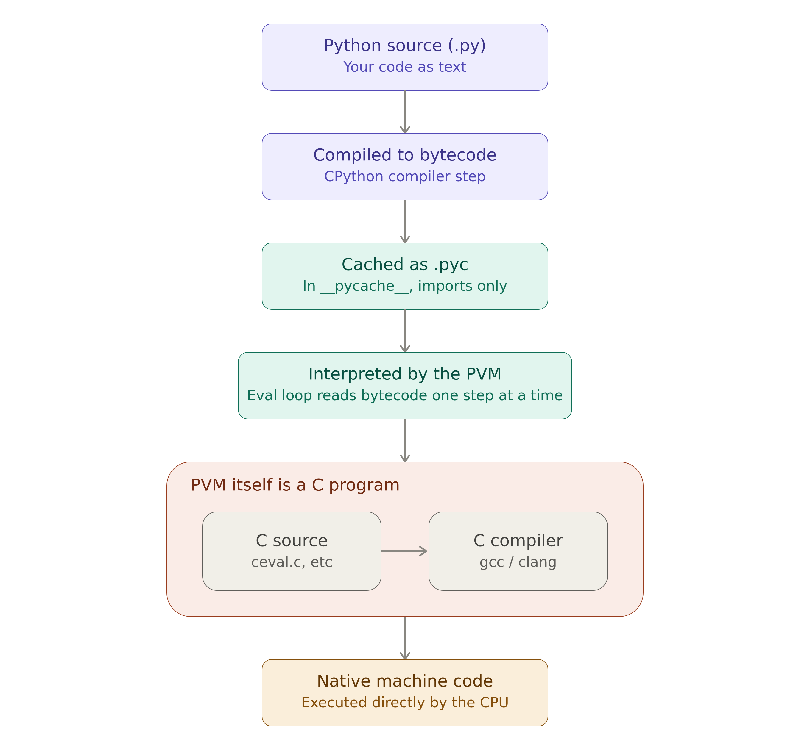

When I decided to study it, I felt the same as Naruto learning the Rasengan: It was difficult to learn: Naruto took 3 years to learn; and I took 10 😂, since I firstly heard the words “interpreted”/“compiled” language when I was learning R.
Python, itself is an interpreted language, but there are many nuances that I want to discuss. Let’s start by defining what is a programming language.
1 Programming language
A programming language can be defined by two main pillars:
- Specification (Rules):
- Syntax: how the code is written; some languages my be more verbose than others. For example, in
Cyou need to define the type of each variable and finish the line with;. WhereasPythondoes not require it, butindentationis obligatory for your code to run. - Semantics: It defines basic operations, such as, the operator
+, does what we think it does: add two values together (in case offloats/ints) or concatenate twolistsin Python. - Data Types & Core concepts: In
Python, we havedict, but we do not havedataframes;Ris the opposite.
- Syntax: how the code is written; some languages my be more verbose than others. For example, in
- Implementation:
- Machines do not understand
source code, only binary machine code (0s and 1s). So, for every programming language, it is necessary a tool that translates the source code into binary code that can be:- Compiler: It will translate upfront the entire source code into an independent and exclusive binary code. It is a characteristic of
C,RustandGo; - Interpreter: It will translate the source code into binary code at the runtime line by line. This is the primary implementation strategy for
Python,JavaScriptandR.
- Compiler: It will translate upfront the entire source code into an independent and exclusive binary code. It is a characteristic of
- Machines do not understand
2 Python’s implementation
What makes a programming language interpreted or compiled is its implementation. Python has different implementations, such as:
NuitkaandCythonmake the Python a compiled language, so, all machine code is known ahead of time.PyPyusesJIT (Just-In-Time)compilation: it takes the Python source file, converts it to bytecode1, and directly compile it into machine code during the runtime (not ahead of time). It is a just-in-time compiler, rather than an ahead-of-time compiler.CPython, the official implementation, first compile the Python source code tobytecode2. Then the Python Virtual Machine (PVM) - itself a program in C - reads thatbytecodeand hands each instruction off to an already-existing C function inside the interpreter that carries it out. That’s why Python is known as an “interpreted language”.Bytecodeplays a vital role here: Python caches the first time a module is imported, saving it as a.pycfile so it does not need to be recompiled on every subsequent import.- It never translates
Pythoncode intomachine codedirectly; instead, the PVM executes the bytecode by invoking the corresponding pre-compiled C function for each instruction.
Finally, what makes a language interpreted or compiled is the implementation, not the language itself.
3 Quick questions
Right now, I will dive into specific questions that come up when writing Python code:
3.1 Why is Numpy faster than pure Python code?
It happens because Numpy is vectorized, while Python does not. And by vectorized, it means that the code will pass through the interpreter only once and all the routine will be executed in a loop in C; instead of for every loop calling the interpreter in regular for loop written in Python.
Moreover, it has unboxed, contiguous, C-native buffers see in Section 3.2.
I will show an example in order to make it clearer:
import dis
import numpy as np
import time
def pure_python_version(n):
total = 0.0
for i in range(n):
total += i * i
return total
def numpy_version(n):
arr = np.arange(n, dtype=np.float64)
return np.sum(arr * arr)
N = 100_000_000
start = time.perf_counter()
result_py = pure_python_version(N)
py_time = time.perf_counter() - start
print("=" * 60)
print(f"PURE PYTHON VERSION THAT TOOK {round(py_time, 2)} seconds in BYTECODE")
print("=" * 60)
dis.dis(pure_python_version)
start = time.perf_counter()
result_numpy = numpy_version(N)
numpy_time = time.perf_counter() - start
print()
print("=" * 60)
print(f"NUMPY VERSION THAT TOOK {round(numpy_time, 2)} seconds in BYTECODE")
print("=" * 60)
dis.dis(numpy_version)============================================================
PURE PYTHON VERSION THAT TOOK 15.11 seconds in BYTECODE
============================================================
6 0 RESUME 0
7 2 LOAD_CONST 1 (0.0)
4 STORE_FAST 1 (total)
8 6 LOAD_GLOBAL 1 (NULL + range)
16 LOAD_FAST 0 (n)
18 CALL 1
26 GET_ITER
>> 28 FOR_ITER 10 (to 52)
32 STORE_FAST 2 (i)
9 34 LOAD_FAST 1 (total)
36 LOAD_FAST 2 (i)
38 LOAD_FAST 2 (i)
40 BINARY_OP 5 (*)
44 BINARY_OP 13 (+=)
48 STORE_FAST 1 (total)
50 JUMP_BACKWARD 12 (to 28)
8 >> 52 END_FOR
10 54 LOAD_FAST 1 (total)
56 RETURN_VALUE
============================================================
NUMPY VERSION THAT TOOK 0.88 seconds in BYTECODE
============================================================
13 0 RESUME 0
14 2 LOAD_GLOBAL 0 (np)
12 LOAD_ATTR 3 (NULL|self + arange)
32 LOAD_FAST 0 (n)
34 LOAD_GLOBAL 0 (np)
44 LOAD_ATTR 4 (float64)
64 KW_NAMES 1 (('dtype',))
66 CALL 2
74 STORE_FAST 1 (arr)
15 76 LOAD_GLOBAL 0 (np)
86 LOAD_ATTR 7 (NULL|self + sum)
106 LOAD_FAST 1 (arr)
108 LOAD_FAST 1 (arr)
110 BINARY_OP 5 (*)
114 CALL 1
122 RETURN_VALUEI am not an expert on bytecode instructions in Python, but see that for pure Python, there is an operation called FOR_ITER that goes to L2, and then, it returns to L1, which it is the loop itself.
When we look at the Numpy version, the for loop is gone, and all instructions run only once, not N times.
3.2 Why is C generally faster than Python?
- C does not have an interpreter; it dispatches all code ahead of time into machine code during compilation;
- Defining the variable types at declaration makes the code’s memory layout known to the machine ahead of time:
- It does not have to make Runtime type checking
- It can calculate in advance how much of memory the operation in take, and optimize it
- Python values are boxed — every int/float is a full object with type info and a reference count, not a raw number sitting in memory. C works directly with raw bytes, no wrapper.
3.3 If I annotate my functions, will my code run faster?
NO. It happens because CPython ignores all type hints during compilation. See that in the below example the bytecode is the same:
import dis
import time
def add_no_hint(a, b):
return a + b
def add_with_hint(a: int, b: int) -> int:
return a + b
print("=== WITHOUT type hint ===")
dis.dis(add_no_hint)
print()
print("=== WITH type hint ===")
dis.dis(add_with_hint)=== WITHOUT type hint ===
4 0 RESUME 0
5 2 LOAD_FAST 0 (a)
4 LOAD_FAST 1 (b)
6 BINARY_OP 0 (+)
10 RETURN_VALUE
=== WITH type hint ===
7 0 RESUME 0
8 2 LOAD_FAST 0 (a)
4 LOAD_FAST 1 (b)
6 BINARY_OP 0 (+)
10 RETURN_VALUEFootnotes
bytecode is an intermediate low-level code that can be read and interpreted by a machine, being originated by a source code.↩︎
you can inspect the bytecode of any Python function by calling
dis.dis(<your_function>), see is python a dynamic language.↩︎